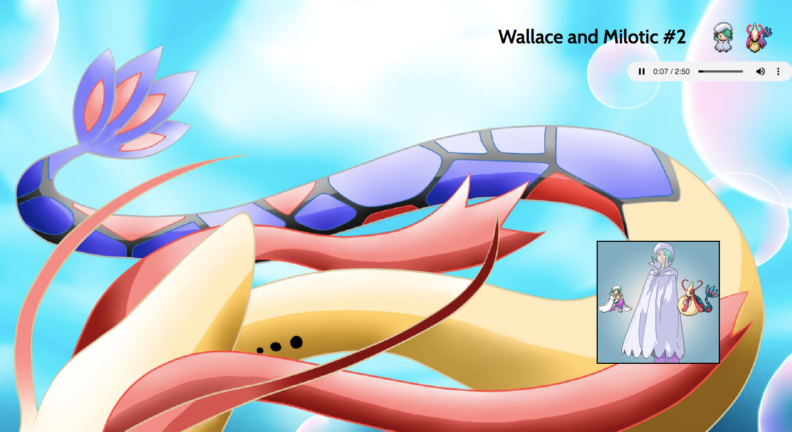
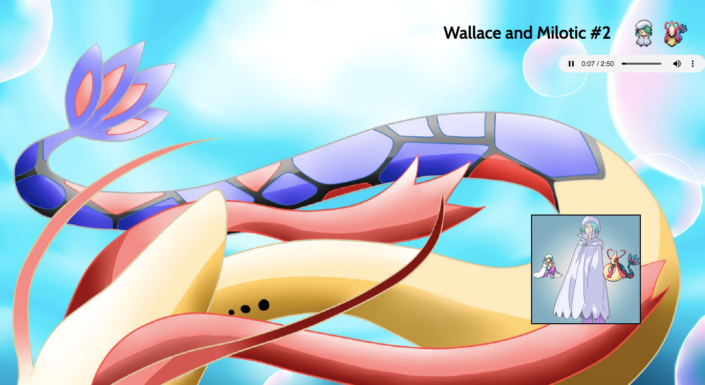

About
Projects
Goals
Contact
My name is Aphason Aberham. I live in downtown Toronto, and currently a 1st year IT student at York University. I am pursuing a career in fullstack development. After graduating the Lighthouse Labs Web Development Bootcamp, my enjoyment and commitment to coding has increased, which is why I decided to continue down this route. I strive for gradual improvement in my work as well as feedback from others.
Hobbies: Coding, Drawing, Basketball, Poetry
Pokemon Music Listener

 

Link To Github
Decription: A one-page web application where you can listen to compiled music from the Pokemon franchise.
Frontend: jQuery, HTML, CSS
Backend: N/A